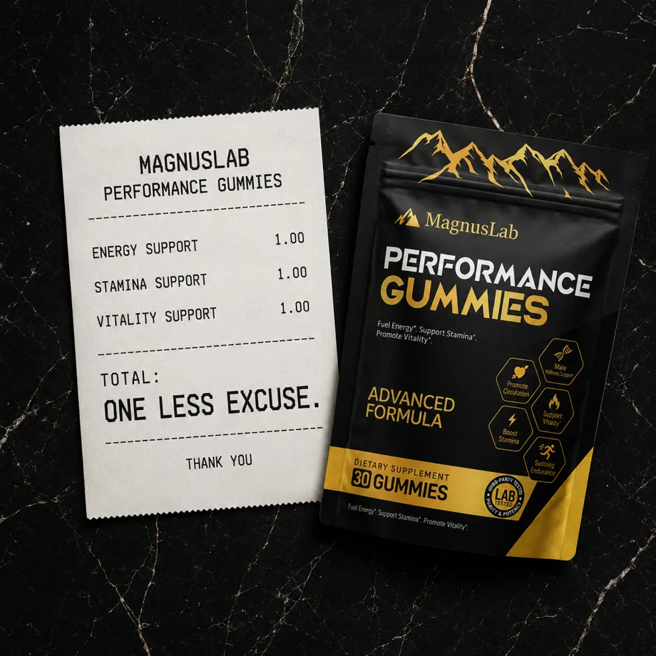
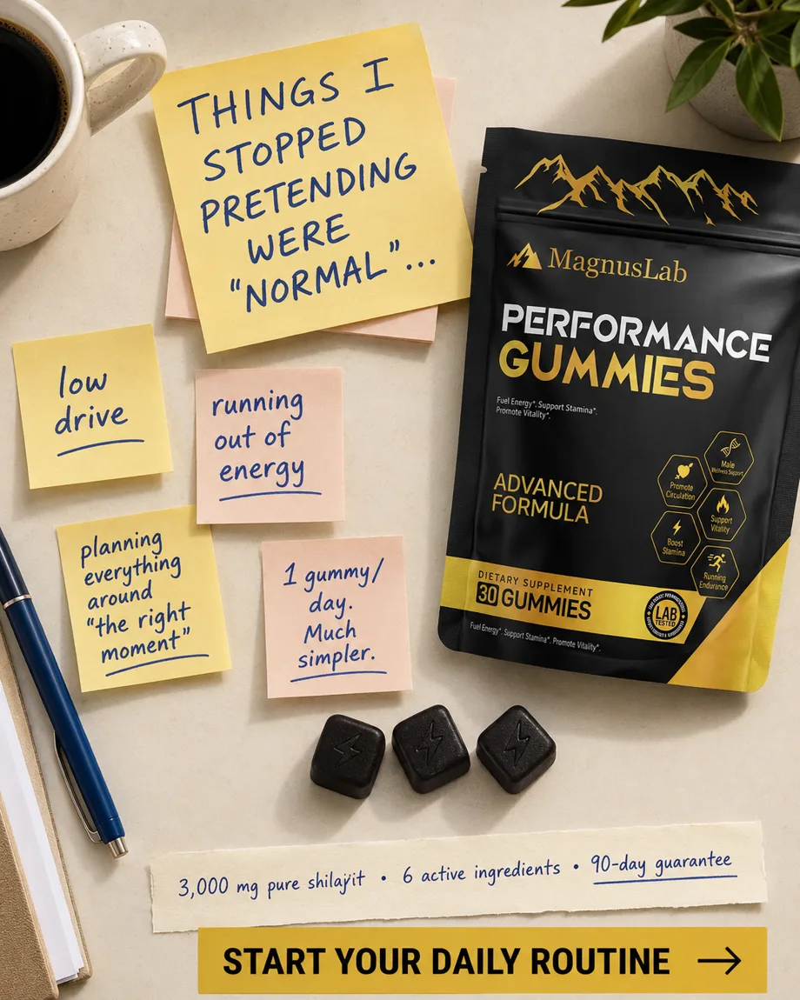
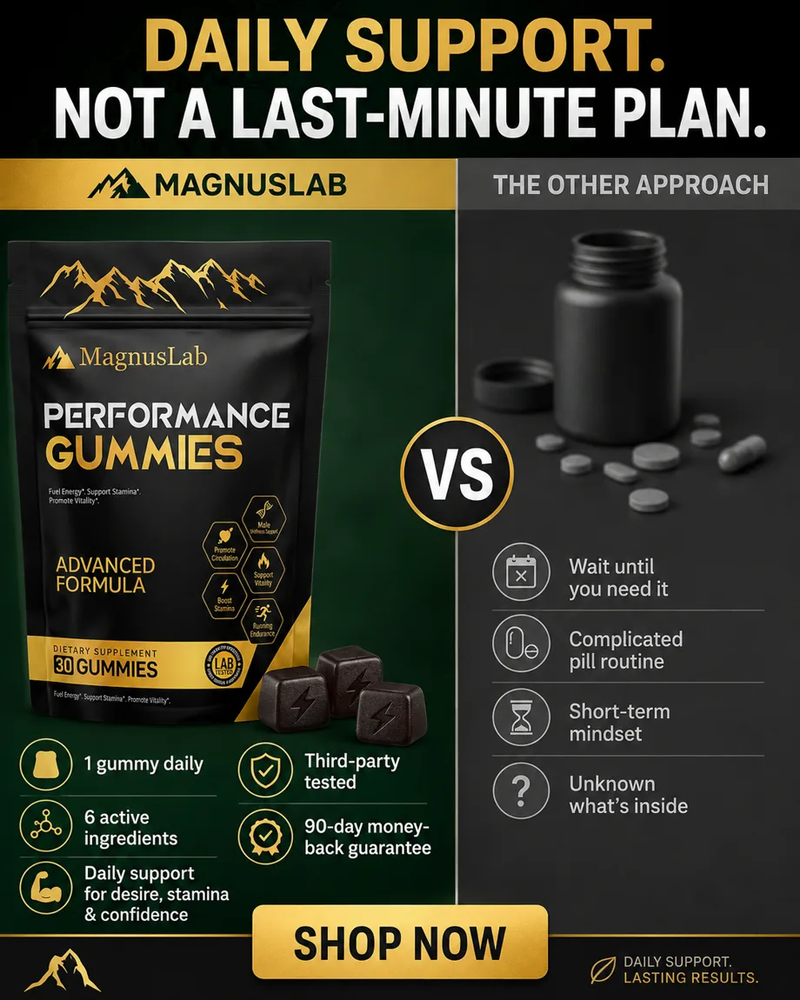
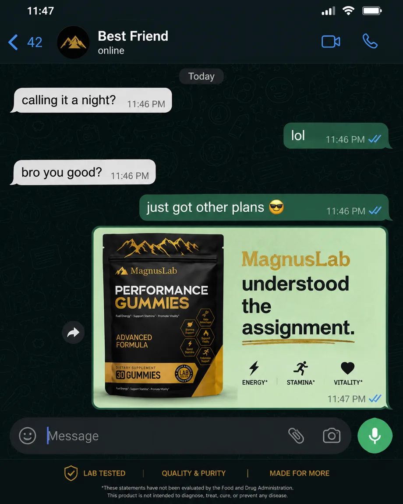
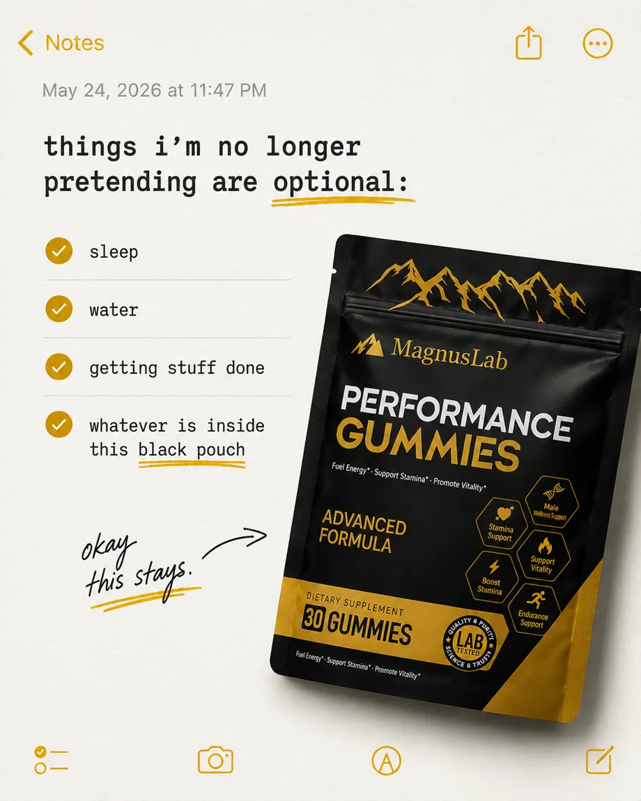
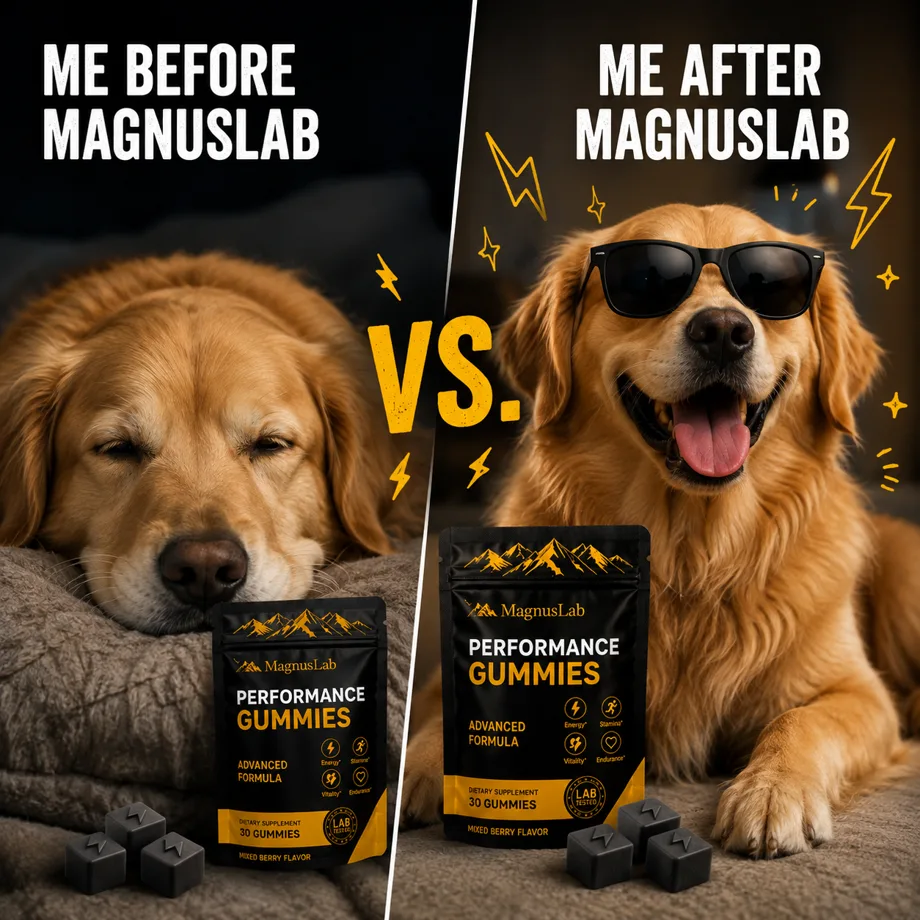
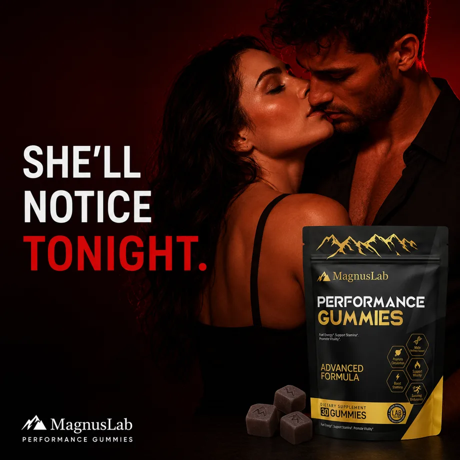
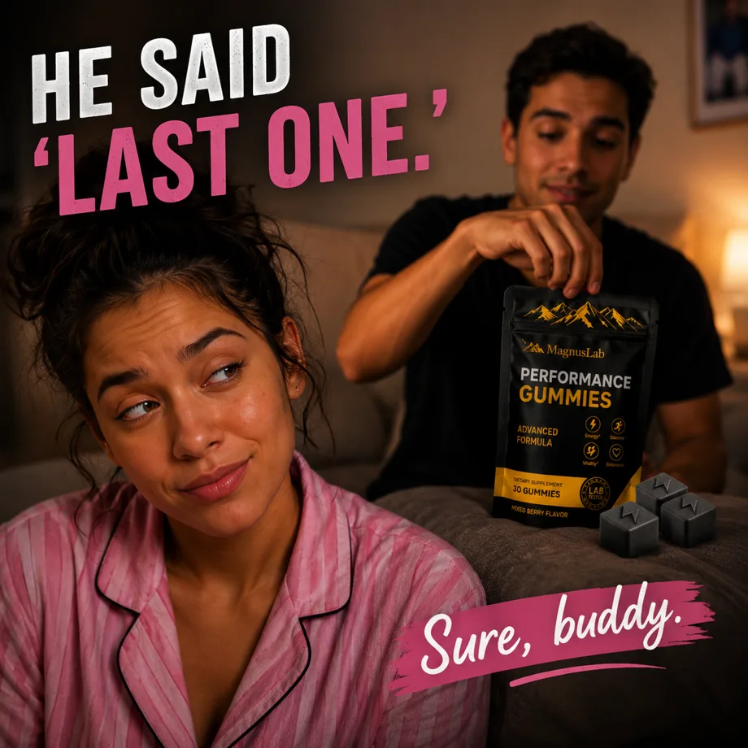

Native-style / AI-assisted static ad
Receipt concept
An everyday receipt becomes the visual hook, with product placement and a compact benefit-led layout.
Eight AI-assisted static ad concepts for MagnusLAB, spanning native-style, comparison, lifestyle and humor-led formats.
Developing visual angles and adapting the product presentation to each creative format.
Prompt iteration, visual direction and product placement formed part of the production workflow.
Layout decisions, brand consistency and creative refinement brought the assets into their final presentation.
8 creatives shown

Native-style / AI-assisted static ad
An everyday receipt becomes the visual hook, with product placement and a compact benefit-led layout.

Routine & lifestyle / AI-assisted static ad
Handwritten notes frame the product around everyday routines, with a warm tabletop setting.

Comparison / AI-assisted static ad
A split layout organizes the brand’s comparison messaging around a clear product focal point.

Conversation / AI-assisted static ad
A familiar messaging interface gives the product a conversational, native-social presentation.

UI-inspired / AI-assisted static ad
A checklist format and product placement bring an everyday app interface into an advertising concept.

Humor / AI-assisted static ad
A playful visual contrast uses expressive dog imagery as a humor-led attention hook.

Lifestyle / AI-assisted static ad
A dark red palette and relationship-led scene establish a direct-response lifestyle direction.

Humor / AI-assisted static ad
Conversational headline treatment and a playful scenario give the product a social-first framing.
Concept direction, prompt iteration, layout decisions, brand adaptation and final creative refinement. These examples show creative execution; campaign performance and product claims are not independently evaluated here.